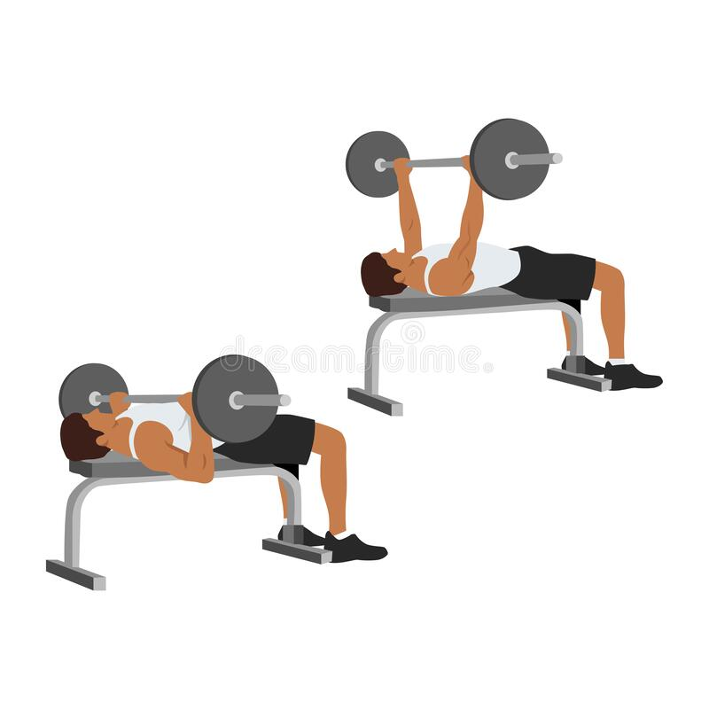

Barbell Bench Press

Level: Beginner
Muscle groups: Chest, Arms, Shoulders
Description: Grip barbell with hands slightly further than shoulder width apart.
Push up until arms are straight.
Pull weight down to your chest.
Push back up.
Click me for a video example!
Dumbbell Curls

Level: Beginner
Muscle groups: Arms, Biceps, Forearms
Description: Grip dumbbells underhanded.
Start with the weight at your hips.
Keep shoulders and elbows in place.
Pull the weight up.
Once at the top, control the weight back down to your hips.
Click me for a video example!